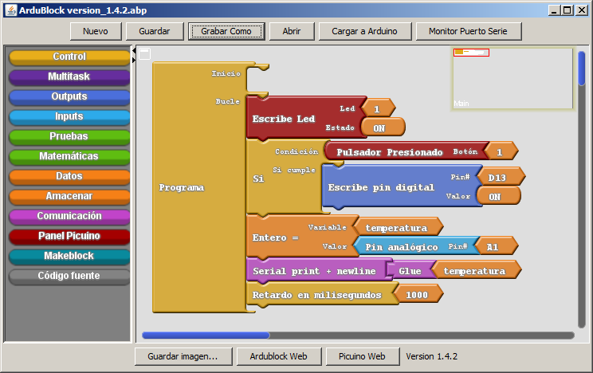

1. Introduction to Ardublock¶
Ardublock is a tool for Arduino that allows programming with graphic blocks. It is oriented to make programming easier for users without previous experience, greatly simplifying the task of creating programs with a simple graphical environment.
It is a tool of the Arduino programming environment and cannot work apart from it.
The version provided on this web page is a modified version of the original Ardublock, in which the colors, menus and number of blocks have been simplified in order to make it easier to use.
Ardublock installation¶
To install the latest version of Ardublock-Picuino, follow these steps:
Download the
Ardublock-Picuino toolCopy the file to the Arduino directory. The directory can be found in the Arduino environment, by pressing the menu:
File... Preferences... Project location.Unzip the file in the Arduino directory.
Close and reopen the Arduino environment. The new tool should appear in the menu:
Tools... Ardublock
Installation of auxiliary libraries for Arduino¶
These libraries allow the Arduino board to control peripherals such as an LCD display panel or infrared emitters and receivers.
To install all the libraries at once, follow these steps:
Download the :download:` archive with the libraries for Arduino <_downloads/arduino-libraries.zip>`
Copy the file to the Arduino directory. The directory can be found in the Arduino environment, by pressing the menu:
File... Preferences... Project location.Unzip the file in the Arduino directory.
Close and reopen the Arduino environment. The new libraries should appear in the menu:
Program... Include library...
To install individual libraries using the Arduino environment, you can read the following link on how to add a library to the Arduino environment.
Basic management of Ardublock¶
Open the Arduino environment: to open ardublock it is necessary to first have the Arduino environment open, by clicking on the following icon.

Connect the correct port: in the tools menu... port... you have to select the port to which the Arduino board is connected. For more information see Arduino troubleshooting
Open Ardublock: the word Ardublock will appear in the tools menu of the Arduino environment. By clicking on it, the environment will appear without any program.
Run the program: moving the blocks from the menus on the left to connect them with the program block.
Duplicate blocks: clicking on a block with the right mouse button, the 'Clone' option appears, which duplicates the block and all the blocks that hang below it.
Add comments: by clicking on a block with the right mouse button, the 'Add comment' option appears, allowing you to write a text that explains the function of the block. The comment can be hidden or shown by clicking the question mark '?' to the left of the block.
Arrange the blocks: by clicking on an empty area with the right mouse button, the option to 'Arrange all the blocks' appears. by pressing it, all the blocks are arranged in an orderly manner.
Clear Unwanted Blocks: By moving the blocks to the left in the menu area, the blocks will disappear.
Upload the program to Arduino: by clicking the upper button 'Upload to Arduino' the blocks will be transformed into code that will be uploaded to the Arduino board that is connected. If it is the first program to be loaded, the environment will ask for confirmation to save the program. You have to answer 'save'.
This process is not immediate, you have to wait a few seconds until it ends.
Save the Ardublock program: Pressing the top button 'Save as' a box will appear in which to write the name of the program and its location.